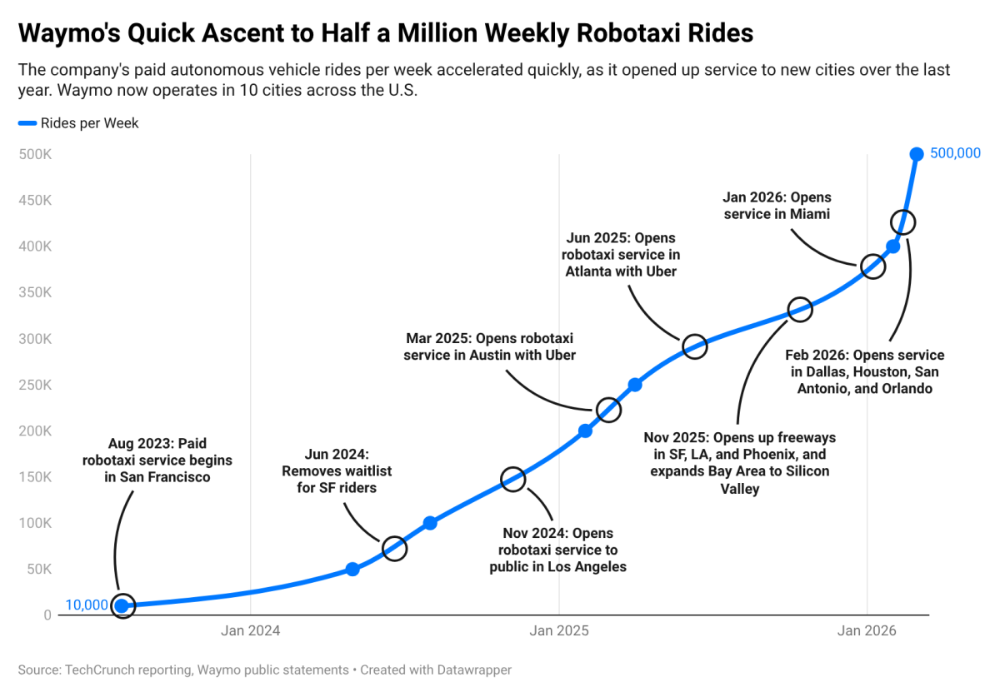

Waymoのロボタクシー事業は驚異的な成長を遂げている。同社は現在、米国10都市で週50万件の有償ロボタクシー乗車を提供している。特筆すべきは、この数字が2年足らずで10倍に膨らんだことだ。2024年5月時点での週5万件から現在の水準へと急増した。
サービスは計10都市で展開されている。フェニックス・サンフランシスコ・ロサンゼルスという当初の3市場に加え、過去1年間で7つのサンベルト地域が新たに加わった。
2025年12月に米国道路交通安全局（NHTSA）へ提供されたデータによれば、「同社は第5世代自動運転システムを搭載した3,067台のロボタクシーを保有していた」とされる。比較的安定したフリート規模でありながら乗車数が伸び続けていることは、車両稼働率の向上を示している。
Waymoの成長は目覚ましいが、現段階では従来型のライドヘイリングと比べるとまだ小規模にとどまっている。Uberは2024年に1時間あたり100万件以上のモビリティトリップをこなしており、Waymoの現在の処理能力をはるかに上回っている。
急拡大に伴い規制当局からの注目も集まっており、スクールバスへの不適切な接近に関する調査や、都市部でのシステム停止車両の管理に関する懸念事項が浮上している。